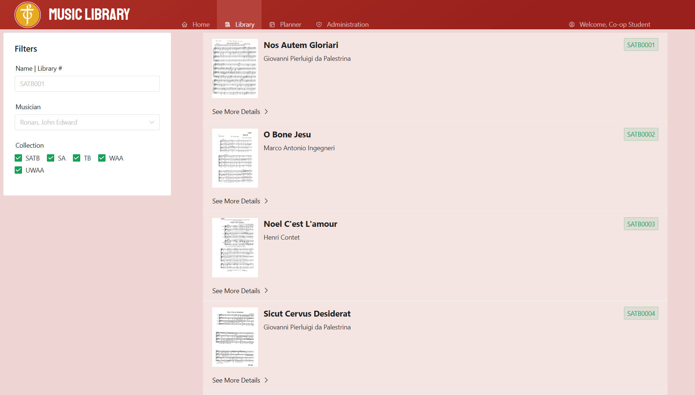

Sep 2024 — Aug 2026
Lifeguard
Water Babies Canada · Toronto
Supervise aquatic environments, enforce safety standards, respond to emergencies, support guests, resolve concerns, and maintain facilities and equipment.
Mechatronics Engineering · University of Waterloo
Engineering student, technology leader, lifeguard, and musician. I bring curiosity, responsibility, and clear thinking to every team I join.
I’m a motivated and adaptable student with experience spanning leadership, customer service, technology, and music performance.
From ensuring safety as a lifeguard to leading technical strategy and creating community music events, I’m at my best when I can take initiative, collaborate, and solve practical problems.
Roles where responsibility, creativity, and teamwork meet.
Water Babies Canada · Toronto
Supervise aquatic environments, enforce safety standards, respond to emergencies, support guests, resolve concerns, and maintain facilities and equipment.
St. Michael’s Choir School · Toronto
Organize school and charity performances, create opportunities for students to play for live audiences, and mentor younger musicians in instruments and ensemble performance.
JA Central Ontario · Toronto
Managed the company’s technical direction, digital tools, and online presence while collaborating with fellow executives to improve strategy and team efficiency.
Practical work that turns information into useful experiences.

Web application
This project took a spreadsheet and turned it into an interactive website to sort and view music.
Learn more2026 — 2031
Mechatronics Engineering
2022 — 2026
Student leadership, athletics, choirs, and President of Electronic Music Club.
Long-term commitments that have shaped how I listen, lead, and contribute.
Since 2018
Volunteer singer at St. Michael’s Cathedral Basilica, performing at weekly Mass.
Since 2025
Performing at local events and gatherings that connect and uplift the community.
Issued Aug 2025
First Class Honours, The Royal Conservatory of Music.